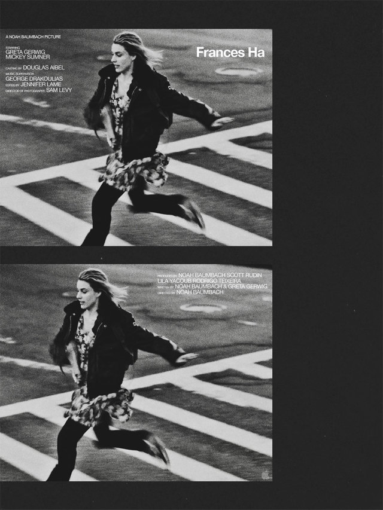
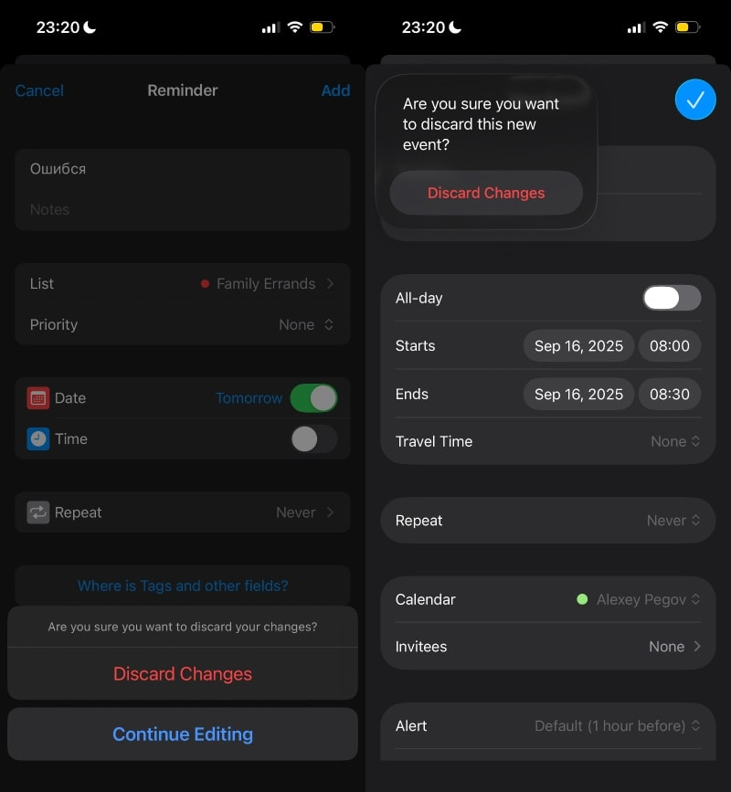

Лермонтов, 2025

Очень хорошее кино.
Очень хорошее кино.
Какой офигенный фонтан!

Приятное и легкое кино.
Как-то незаметно на (not) a visual diary набралось аж сто картинок. Сегодня добавил еще одну.
Цитата отсюда:
В протоколе о дискредитации армии (ст. 20.3.3 КоАП РФ), который составили на певицу Диану Логинову из-за песни Noize MC «Светлая полоса», полицейские объяснили, в чём именно исполнение композиции нарушает закон.
Как сообщила «Ротонде» глава пресс-службы судов Дарья Лебедева, в протоколе полицейские привели цитату из соцсетей Noize MC. Поклонник артиста написал ему, что включал трек «Светлая полоса» в Киеве во время атаки дронов и чувствовал поддержку артиста.
«Таким образом, Алексеевым И.А. посредством как самой песни «Светлая полоса», так и комментария относительно её выпуска, в обществе формируется негативная оценка проведения Российской Федерацией специальной военной операции», — говорится в протоколе.
Какие же все-таки клоуны.
Заметил, что портится настроение, если не смог разбить задачу на небольшие кусочки. Кажется, что что-то написанное за несколько дней (не так много, как можно подумать) — это какой-то такой внутренний порог, за который лучше не переступать. А вот если пилишь там что-то неделю, или две — все, настроение ни к черту. Речь именно про объем — который не вмещается нормально в голове.
В своем Агендусе для создания события в календаре я использовал готовый UI. Увы, но для создания напоминания, такого готового UI не нашлось, поэтому мне пришлось написать его самому.
А сегодня я поставил iOS 26, и теперь экран создания напоминания отличается внешне от экрана создания события в календаре (ну, потому что эпл проапдейтила свой экран, а я на свой пока забил).
Да и хуй бы с ним, но...

И вот смотрю я на все эти округлости и прозрачности, и думаю, что все же очень плохо, когда тебе нужно что-то сделать, но сделать ты этого не можешь (читай: AI), и ты не знаешь, что еще может быть таким же хайповым... кроме... может быть... а что, если... ну, а вдруг... может, мы просто переделаем весь UI, который, на самом-то деле, вроде работает, но, блин, нам же нужно что-то.. ну хоть что-то...
Эх.
Помню, как мне не хватало друзей, которые в какой-то момент уехали из России. Ощутил, как мне сейчас не хватает друзей, которые остались в России, или вернулись в Россию. Или тех, кто не в России, но не рядом. Ребят, мне вас всех не хватает.
СЯУ, что встреченное мной впервые в сербском слово "тло" есть и в русском языке и, хотя практически вышло из употребления, всё ещё встречается как минимум в одном распространённом выражении (вместе с приклеившимся к нему предлогом).
Так вот, "тло" и в сербском, и в русском означает одно и то же: землю, почву, основание — то, что под ногами.
И хотя смысл от этого практически не меняется, похоже, значение этого слова в том выражении становится чуть более понятным. Ну вот, а теперь и вы знаете.
Подсказка: это выражение связано с огнём.